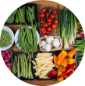

Образ жизни
Образ жизни — это набор привычек, действий, реализуемых в определенном порядке или по графику.
Выражается в особенностях поведения, мышления, принятия решений
Образ дня
.png)
.png)
.png)
.png)
.png)
.png)
Оскар-2020:
роскошные наряды звезд с красной дорожки
роскошные наряды звезд с красной дорожки
Тема дня
Длинные, короткие, каре: сушить волосы?
Большой гороскоп на апрель

Какие продукты содержат много клетчатки?
Запреты и правила: как сохранить идеальный блог
Что такое японская диета?
Цитаты звёзд об образе жизни
Люди могут говорить очень обидные вещи, а сейчас, в век социальных сетей, у них стало еще больше возможностей для этого.
Думаю, требование всегда выглядеть свежо и молодо — это не только результат популярности. Это базовое требование к представительницам моей профессии.
В актерской жизни нужно везение. Больше, чем в любой другой, актер зависим, выбирать роли ему не дано.
Когда дети будут смотреть на великих учёных так же, как они смотрят на знаменитых актёров и музыкантов, человечество совершит большой прорыв.
Если мы подадим руку тем, кто в ней нуждается, будет только любовь, только любовь.
Думаю, это часть актерской ответственности — любить персонажа, которого ты играешь.
Всё о стандартах красоты